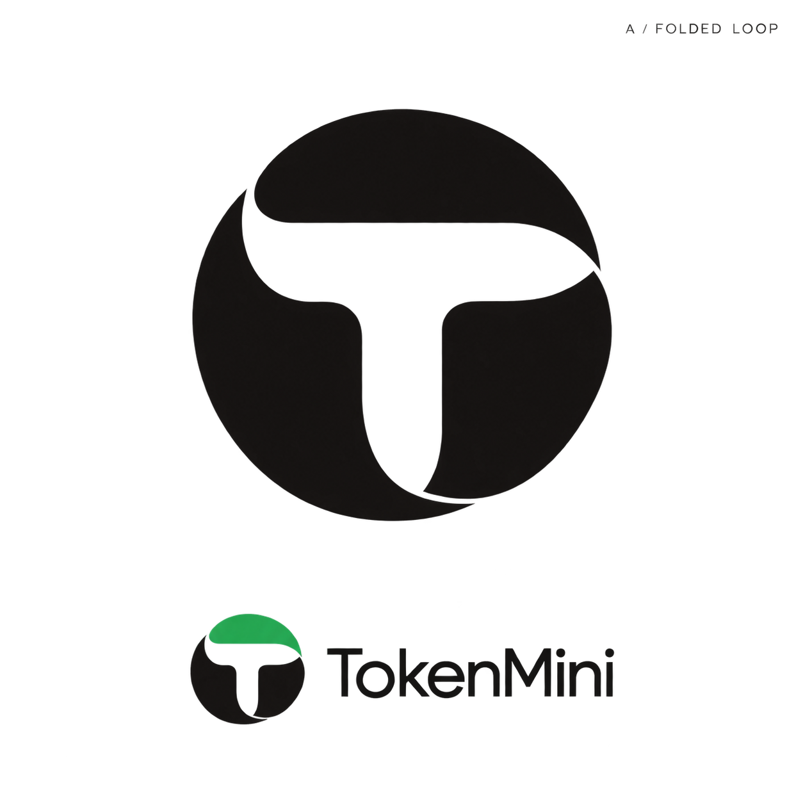
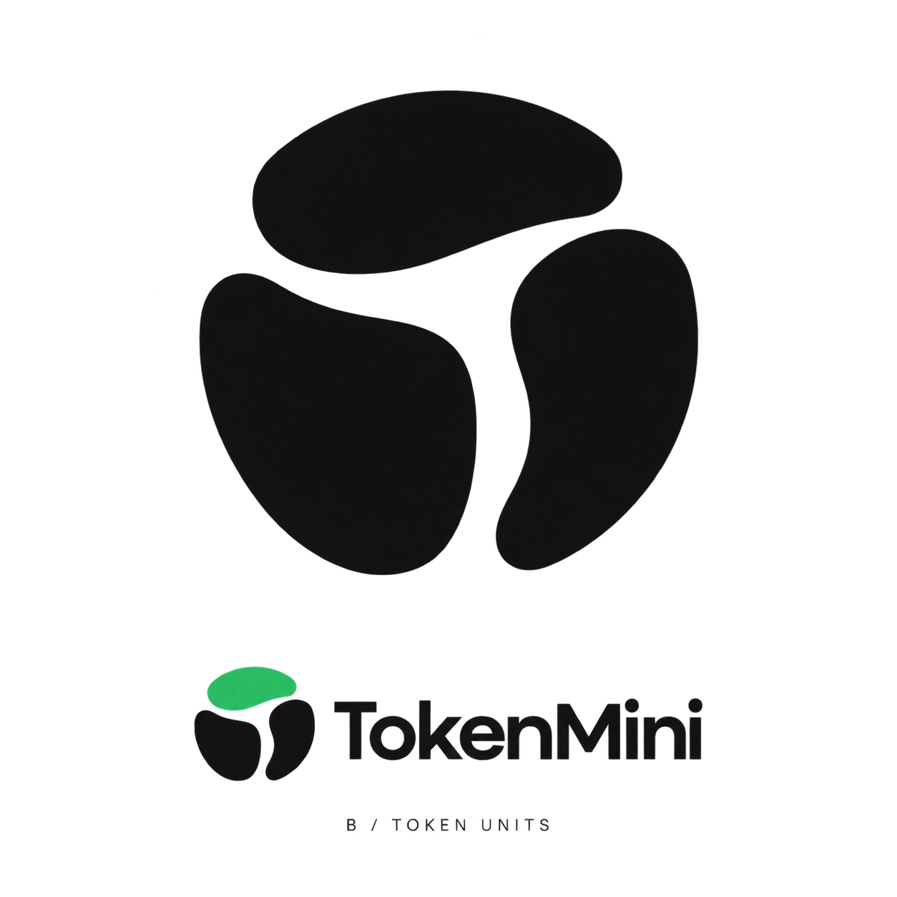
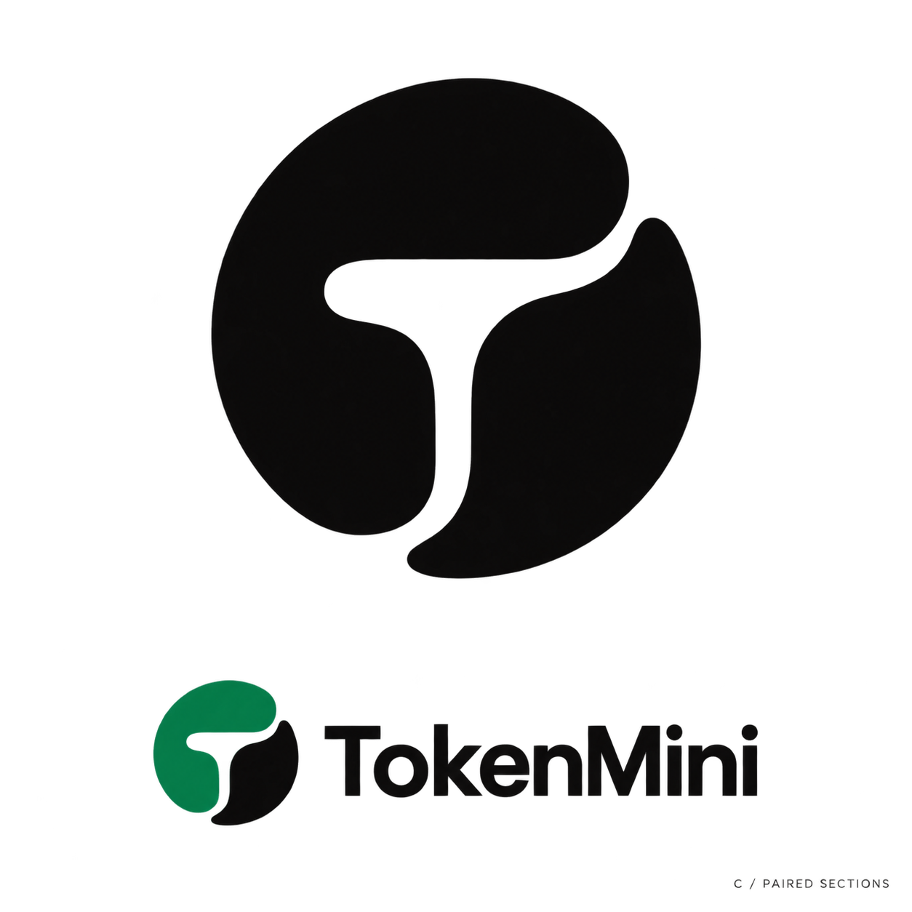

这三张是完成案例研究后生成的第一轮概念草案。重点看轮廓、部件关系和 T 形留白；本轮尚未进入金属与玻璃的材质深化。
用户已否决 A、B、C 全部三稿，此前推荐 C 的判断已撤回。旧稿只保留为失败记录；查看第二轮参考研究 →
内置图片生成工具生成；原图为 1254 × 1254 的 PNG，含透明通道，本页使用浅色底展示。当前不是可发布的矢量成品，也未通过菜单栏小尺寸、商标相似性和真实应用验收。

暂不入选：T 清楚，但连接处仍出现尖角，整体也较接近传统的圆形字母标。

暂不入选：分段与聚合的主题成立，但形体偏有机，和成熟的模块类品牌容易产生相似感。

历史评审（已撤回）：两个部分围出的留白更自然，T 是第二眼线索。仍需收敛曲率，并检查小尺寸和同领域相似形。